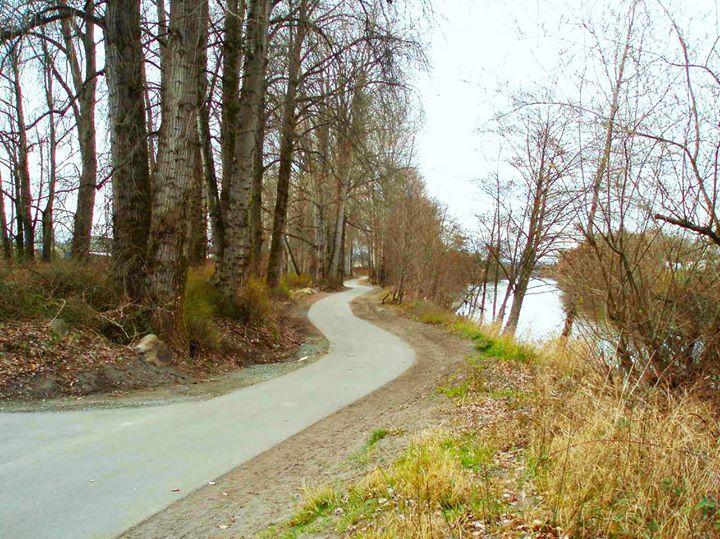
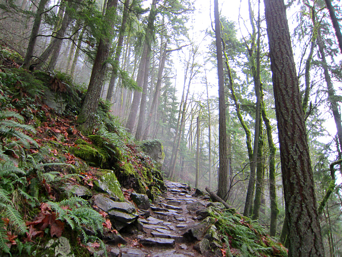

Located on the north shore of Lake Union, Gasworks Park features an easy blacktop path through a giant lawn with a steampunk vibe derived from the Gasworks themselves

A leisurely stroll along the Puyallup River

A pretty good hike up Tiger Mountain along the Chirico Trail to Poopoo Point